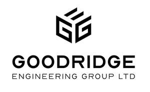
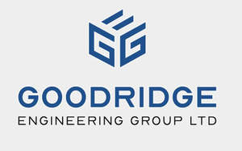
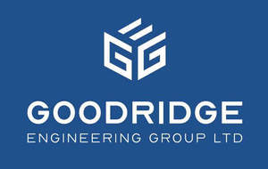

Trade Mark Journal No.2025/014 4 April 2025
UK00004175401 18 March 2025 (37,42)
Mark 1

Mark 2

Mark 3

- Class 37
- Building construction, maintenance, renovation and repair; advisory services relating to the maintenance and repair of mechanical and electrical equipment; electrical installation services; electrical wiring services; renovation, repair and maintenance of electrical wiring; maintenance of commercial electrical systems; maintenance and repair of electronic equipment; electric appliance installation; installation, maintenance and repair of fire alarms systems; installation of fire suppression systems; installation of passive fire protection; installation of active fire protection; installation, maintenance and repair of fire extinction systems; installation of fire detection systems; installation of industrial fire protection; installation of fire evacuation systems; installation of lighting systems; installation, maintenance and repair of lighting apparatus; installation, maintenance and repair of security systems; information services relating to installation of security systems; installation of security and safety equipment; Installation, maintenance and repair of burglar alarms; installation of doors and windows; wiring of offices for data transmission; installation, maintenance and repair of data communications networks; application of sheathing to optical fibres; beneath ground construction work relating to cabling; beneath ground construction work relating to wiring; installation of communications network instruments; installation of wireless telecommunications equipment and wireless local area networks; installation of data network apparatus; building project management services; construction management services; installation services for building scaffolds, working and building platforms; installation of computer systems; maintenance and repair of energy generating installations; installation of solar heating systems; installation of solar powered systems; maintenance and repair of solar power installations; maintenance and repair of solar heating installations; installation of power generating apparatus; construction of geothermal energy installations; construction of geothermal heating installations; vehicle battery charging; charging of electric vehicles; installation of lighting systems; installation of lighting apparatus; maintenance and repair of access control systems; installation, maintenance and repair of physical access control; HVAC (heating, ventilation and air conditioning) installation, maintenance and repair; installation, maintenance and repair of air-conditioning apparatus; installation of heating and cooling apparatus; installation of central heating; pump repair; installation, maintenance and repair of plumbing; installation, maintenance and repair of electricity generators; building inspection [in the course of building construction]; information, advisory and consultancy services in relation to the aforesaid.
- Class 42
- Surveying; building inspection services [surveying]; home inspection services [surveying]; engineering surveying; certification services for the energy efficiency of buildings; testing services for the certification of quality or standards; quality control testing; quality audits; conformance testing services; certification [quality control]; information, advisory and consultancy services in relation to the aforesaid.
Goodridge Electrical Contractors Ltd
Representative: Wilson Gunn